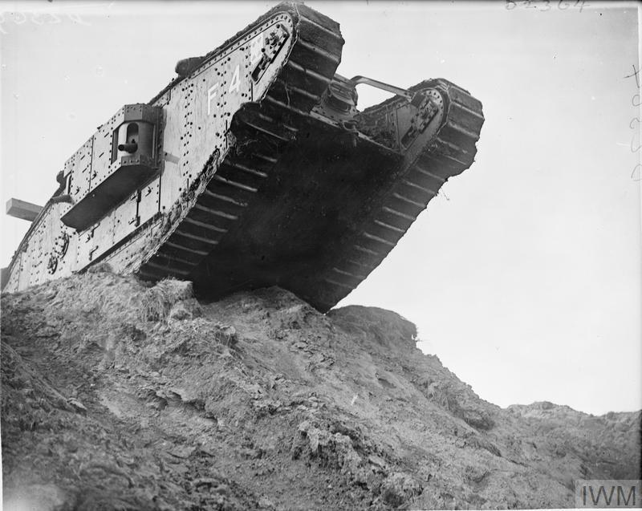
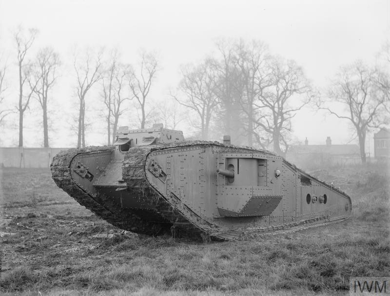
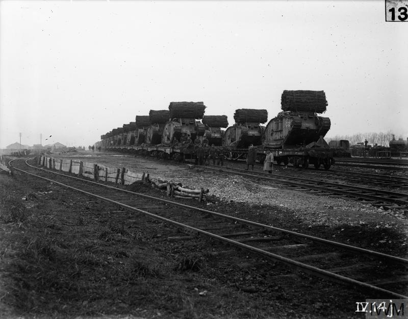
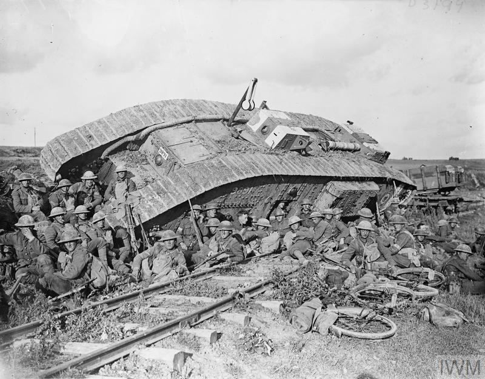
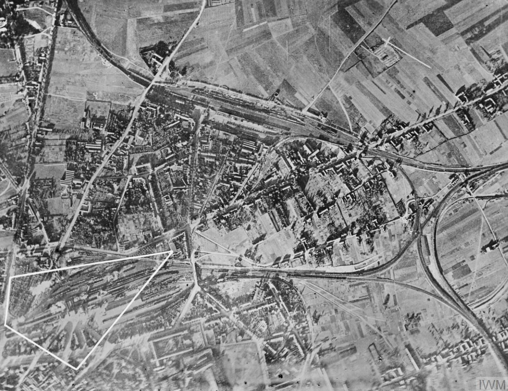
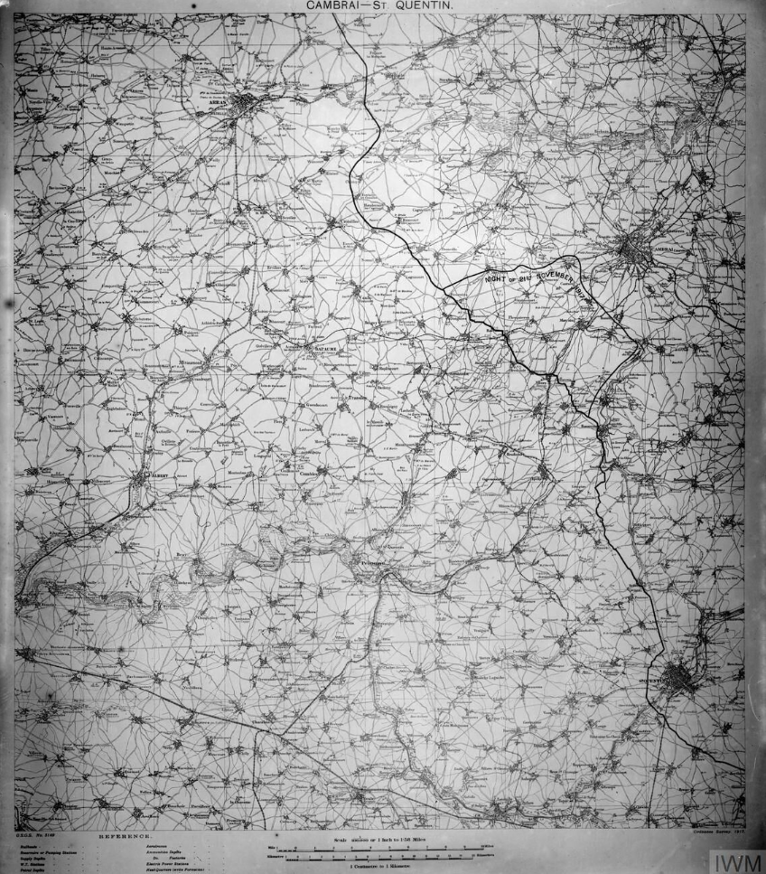

Primera Batalla de Cambrai
La conocida como Primera Batalla de Cambrai se libró entre el 20 de noviembre y el 7 de diciembre de 1917 y marcó un hito en la historia militar de la Primera Guerra Mundial.Tuvo lugar cerca de la ciudad de Cambrai en Francia, una posición de suministro clave para la Siegfriedstellung alemana (conocida como la Línea Hindenburg). .Fue la primera ofensiva en la que los tanques se utilizaron de forma masiva y efectiva, con el ejército británico desplegando cerca de 400 de estos vehículos. Combinado con un bombardeo artillero sorpresa sin la tradicional preparación previa, esta táctica permitió a los británicos romper con relativo éxito la hasta entonces inexpugnable Línea Hindenburg del ejército alemán, avanzando varios kilómetros en un solo día.
Sin embargo, el impulso inicial británico no pudo ser sostenido. Los avances se ralentizaron debido a la fatiga de las tropas, la falta de reservas y la creciente resistencia alemana, que comenzó a contraatacar de forma organizada. La incapacidad británica para consolidar y explotar rápidamente las brechas creadas el primer día dio a Alemania el tiempo crucial para reforzar sus posiciones y traer refuerzos, estabilizando de nuevo el frente.
La batalla concluyó con un contraataque alemán igualmente innovador, que empleó tácticas de infiltración de "Stosstruppen" (tropas de asalto) para recuperar la mayor parte del terreno perdido. El resultado final fue esencialmente una sangrienta batalla de desgaste que dejó el frente prácticamente igual que al inicio, con un balance de alrededor de 45,000 bajas para cada bando. A pesar de su conclusión tácticamente indecisa, Cambrai demostró el potencial de los tanques y las tácticas de sorpresa para superar la guerra de trincheras, sentando un precedente para los conflictos futuros.

Tanque en lo alto de una colina a punto de descender en la Escuela de Conducción de Tanques en un entrenamiento especial para la Batalla de Cambrai. Modelo Mark IV del tanque británico. Dominio Público. Fuente: Imperial War Museum.
| País | Fuerzas desplegadas | Bajas |
|---|---|---|
| Imperio Británico | Al 20 de noviembre:
Al 30 de noviembre:
|
~45 200 hombres |
| Imperio Alemán |
Al 20 de noviembre:
Al 30 de noviembre:
|
~50 000 hombres |
La revolución blindada
Durante los primeros años de la guerra las tácticas militares prácticamente no se habían adaptado a los nuevos tiempos. Pese a tener registros recientes de cómo funcionaba el conflicto moderno (como sucedió en la guerra Ruso-Japonesa) la mayoría de los generales de ambos bandos seguían confiando en tácticas basadas en la guerra de secesión estadounidense: la importancia de la infantería y, sobre todo, de las cargas de caballería. Pero en una guerra en la que la mayor parte del campo de batalla >está embarrado, lleno de alambre de espino y barricadas para evitar asaltos y todo protegido por ametralladoras automáticas que son capaces de disparar en un minuto lo que un 450 soldados en un minuto correr con cientos de caballos contra las líneas enemigas no suele ser una buena idea. Y esta lección la aprendieron más pronto que tarde los Estados Mayores de ambos ejércitos. Así, neutralizando el tipo de unidad de ataque más rápido de la época , es como se consigue estancar un conflicto. Al menos hasta la irrupción del tanque.
Un tanque en esta época no dejaba de ser una pequeña fortaleza propulsada. Pese a su lentitud, su blindaje y potencia de fuego lo hacían un activo en el campo de batalla capaz de cambiar la balanza a favor del ejército que los estuviera utilizando. Y en este caso el Imperio Británico dominó con su Tanque Mark IV. El Mark IV fue un elemento revolucionario en Cambrai, no solo por su número —casi 400 unidades—, sino porque demostró que los tanques podían romper las defensas estáticas de trincheras y alambradas que habían definido la guerra hasta entonces. Su blindaje, de hasta 12 mm, lo hacía relativamente resistente a las ametralladoras y al fuego de fusilería, y su capacidad para cruzar trincheras anchas y aplastar obstáculos gracias a ese diseño trapezoidal tan característico permitió a la infantería británica avanzar tras ellos con una velocidad inédita. La sorpresa táctica y la potencia de fuego y movilidad de estos tanques llevaron a una ganancia territorial inicial espectacular, algo casi imposible en anteriores ofensivas.
Sin embargo, el Mark IV también reveló sus limitaciones: era lento, propenso a averías mecánicas, y vulnerable a la artillería alemana una vez que esta se reorganizó. A pesar de ello, Cambrai probó que el tanque no era solo un arma experimental, sino un componente esencial para futuras operaciones. Su éxito táctico sentó las bases para el desarrollo de blindados más avanzados y para nuevas doctrinas de guerra combinada, cambiando para siempre el carácter de la guerra terrestre moderna.
Galería de imágenes




